到今天，正好是我做网站出海整整一年。
流量最大的站，注册（邮箱登录）用户29万+
第二大站，注册用户14万+
第三大站，注册用户14万+
其他都是几千到几万的小站。
月访问量：
第一大站
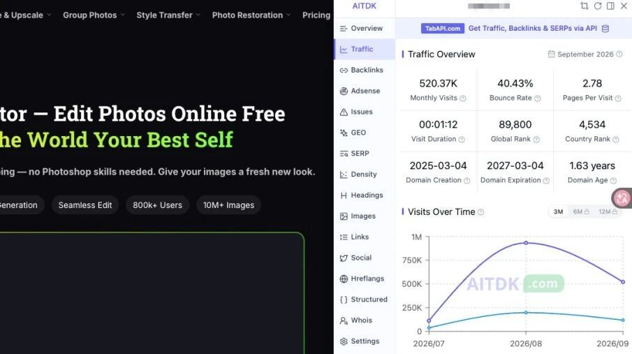
第三大站
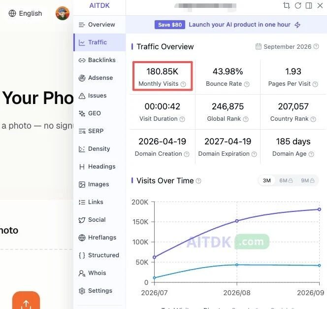
第二大站
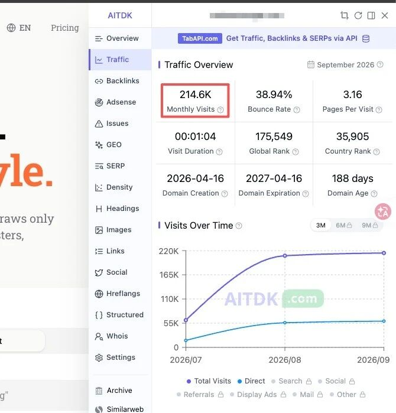
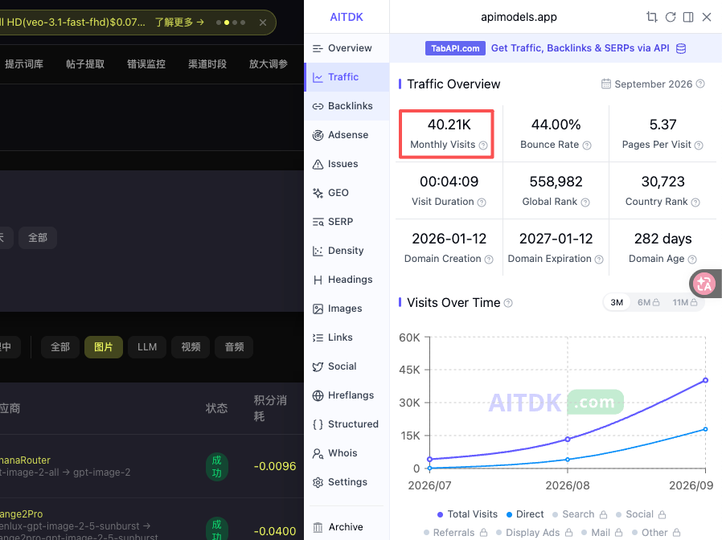
其他一些小站就不放了，
加起来正好100万+
接下来是复盘
第一阶段：那些走过的弯路
我去年3月份就开始用cursor做app开发，
因为在国内做了十几年的APP的缘故，
APP的那点事儿我太熟悉不过了，
我觉得我比别人能做出更牛逼的APP产品，很多品类在我看来用户体验做的真的是惨不忍睹！
但是如果用户接触不到你，看都看不到你的产品，你的用户体验再好都没用，因为别人看不到你的好
但是对于一个新产品来说，
Appstore凭什么推荐你呢？
新品那点推荐流量少的可怜，根本不足以冷启动
所以做了半年多发现app最好的获客渠道是自媒体
但是在被封了两个Reddit和1个tiktok后，
我觉得真的没法做了。
给你们看看我做的第一个app，我重构了7次，自认为做的很完美，也是冲着编辑推荐去的，结果却是很悲惨的
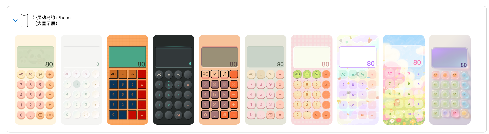
没错，这是一款很好看的计算器，叫「花火计算」
这一阶段总结就是：APP想要纯靠ASO赚钱真的很难很难！
去年三月份的时候cursor还很难用，部署必须自己来，
做过开发的人应该都知道，
部署的镜像拉取，各种依赖的不兼容问题，连专业的程序员都很头痛，更何况我这个不懂任何代码的人？
而且app的开发一般都需要前后端的分离，也就是后端单独在服务器上，前端是独立的app。
这对开发者的要求就很高！
我曾经连续两周每天都要崩溃几次，有种叫天天不应叫地地不灵的感觉！
还好熬过去了，也就造就了我现在对于编程的原理比较熟悉。
直到去年7月份，Claudecode横空出世，我才真的觉得我的春天来了！
但是
直到去年10月份我还是没赚到钱！
实在没办法了，生活压力太大了，
于是在哥飞的各种公开文章的影响下，在10月底决定试试做出海网站。
这个阶段的总结是：
独立开发者需顺势而为，天时、地利、人和必须满足其二才可谋事，否则及时转型方为上策！
这个阶段我只占人和，不足以谋事，还好及时转型了！
第二阶段：转型做出海网站
前期不怎么懂seo，看了一些seo的皮毛，大概对seo有了点概念，就开始了，也做了四五六个小网站，
什么艺术字签名啊、字体设计啊、appstore的多语言一键翻译工具啊
但是这个阶段真的和小白没啥区别，连主词都不知道怎么做，连域名都不知道要结合主关键词取。
也不知道怎么确定主词，什么都是跟着感觉走，也不知道怎么发外链。
于是做完一个网站就废一个！
很快2个月又过去了，时间来到了12月20号这一天，眼看着2025年这一年马上就过去了，自己竟然没赚到一分钱！真的没赚到一分钱！
焦虑、迷茫、不甘、愤怒各种不好的情绪全上来了！
这时候想到了哥飞社群，2600/年的费用让我有些犹豫！
我考虑了整整5天才下定决心，机缘巧合下认识了一个帮哥飞宣传社群的朋友，于是决定试试看，通过他的邀请入了社群，毕竟之前服务器的费用、各种ai工具的费用、办卡的费用都砸进去了，也不在乎这两千块钱了！
于是在12月25号这一天正式进入了哥飞社群！
到今天我才意识到这2000块，几乎改变了我接下来的人生！
加入社群后，我把哥飞发我的几次分享视频全部看完了，对seo有了一些加深。
突然感觉开悟了，因为我好像从底层理解了seo到底是咋回事了！
于是我开始重新审视我之前的网站，立马对我的一个大词ai photo editor网站开始做优化，也就是我现在最大流量的网站！
花了两三天优化后，我就带着孩子去我姐家过元旦了！
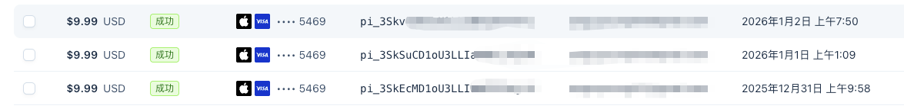
带着电脑去的，玩了3天，我们是12月31号下午出发的，到1月2号晚上我打开了电脑，怎么一下出了3单？
我内心狂喜，人生似乎充满了希望！当时心里的念头就是赶紧回家做优化！
这个用户真的算是我的贵人，写到这里，我突然觉得我要联系他给他送9.9的会员去。
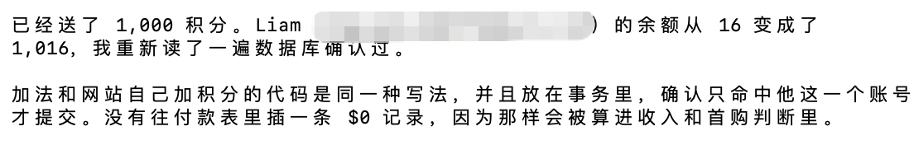
从那以后，我就开始边学边优化网站，
这个主词ai photo editor的网站当初ai不建议我做的，而且是强烈反对的那种。
但是我当成练手的，而且这是个.ai的域名，我不舍得浪费掉！
这我的流量增长趋势：
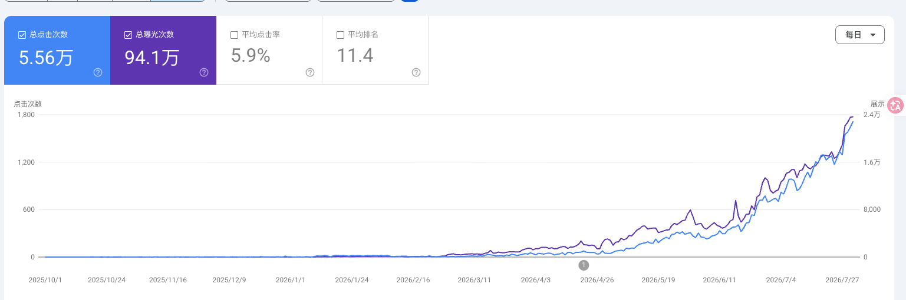
可以看到增长的非常缓慢，直到3月份才开始正式爬坡！
这个过程也让我真真实实的磨练了什么是seo，感受这种踏踏实实做起来流量的感觉！
在这期间，我通过研究canva的流量结构和sitemap发现了一个流量密码，就是疯狂的建内页！
我当时想，一个页面一个关键词，那我是不是可以做1000个不同的变体词？
场景+载体+不同的表达+语言的组合，岂不是等于无限页面了？
于是我在1月份注册了一个其他方向的新域名，
开始这样搞，结果刚开始流量还不错的，也有付费进来。
但是直到3月份，我觉得付费还不错，就疯狂上内页，最多的时候上了3000多内页，一天增加了1000多个页面，我以为我的网站会起飞！
结果这个站从此再也没起来过，到现在已经被我放弃掉了！
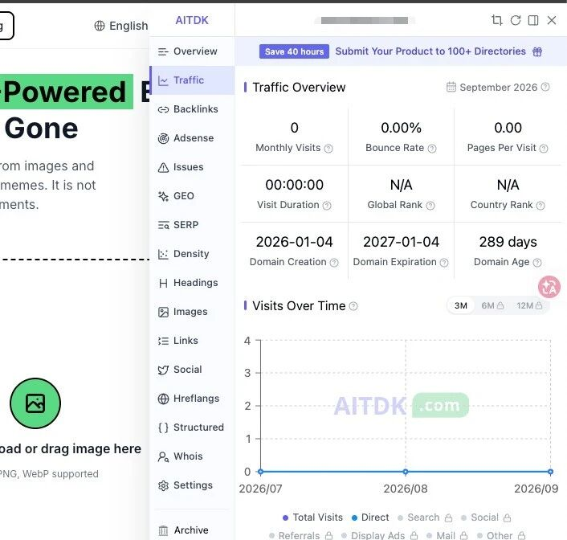
可惜吗？我觉得不可惜，接着往下看就知道了。
这个阶段的总结是：
学到的理论立马去实践，用实践来验证方法的可行性。
也叫边学边干，边干边学！主打一个立马开干！
最大心得：事在人为
第三阶段：实践实践在实践！
当主站的流量开始有所好转的时候，我于是在4月份分别注册了另外两个域名来继续实践。
也就是第二大站和第三大站的那两个。
第三大站的那个做起来是因为选词选的好，
因为在3月份的时候我注意到一个竞品，流量增长很快，而且前十的大多都是大站的内页，所以我毫不犹豫的就干了，花了一天的时间搞完，很顺利。
而且比对手的站做的用户体验还好！
有了之前做死的那个站之后，我就老老实实的做了！
为什么一天就做完了呢？
因为就先上一个首页，等谷歌收录了之后我再增加到5个左右。
前前后后花了5天时间上了5个页面。
之后就简单发了几个外链，然后就不管了！
2周后，我看到出了两单，
我觉得有戏！
于是就疯狂的增加内页，加博客外链！
不错，就是纯博客外链，到7月份才花钱买了45个批量添加外链的服务！这里有个坑，一会说！
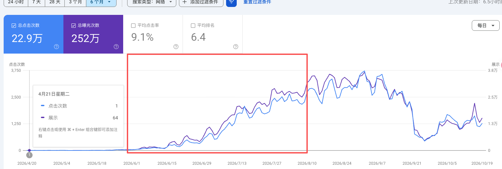
也就是红框的这段时间的操作，流量增长很明显！
之后8月份-9月份流量增长放缓了！
我没有警惕，没有继续增加更多的外链和买一些高质量的外链和文章！
到9月中下旬之后开始腰斩再腰斩！10月份我复盘了一下失败的原因：
1、恰好8-9月份这个时间节点，我之前买的那些批量外链开始不断的失效了！在这之前我是不知道这些外链还有有效期的。所以以后买外链的朋友们注意一下。
2、我在七月份的时候在我朋友的群里做了两次直播，分享了两次我的这站seo相关的内容。当时以为人少，不以为意，结果后来视频内容被传播了出去！
所以被好几个人直接复刻！更有好几个人抄的和我的一模一样！
竞争加剧！因为新站会分走一部分流量。
3、当时有个和我的方向不一样，但是相关的站也在做这个词，他从7月份流量猛涨，现在150万月访问量，把我的一部分流量切走了！
4、谷歌在9月底到10月初开始更新了算法，我的博客外链可能拖累了我的站的评分，加上我的外链又失效了那么多，综合之后谷歌给我的网站权重降低了！最直观的是我的美国的排名直接掉出了前十！
综合以上四点，所以才会出现了天地跌停板式的下跌！直接跌掉了90%的流量！
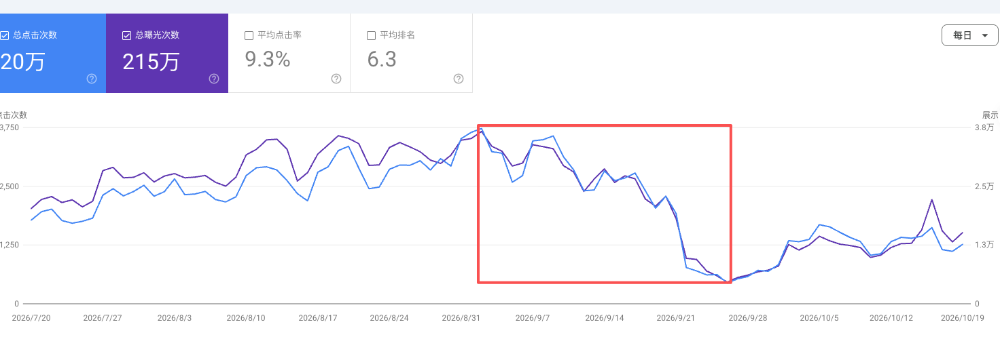
还好目前通过做一些内容和高权重的外链拉回来了一些！
这个站获得的经验是：
当你的产品得到验证的时候，特别是产品的流量起来之后就要不惜利润的重金砸入，把这个词的流量砸到No1,让谁也干不掉你！
所以我没把握好时机，
现在再想要拉回来需要花更多的钱、时间、精力来做更多的内容和外链！
这叫守成，守住自己的成果！
这个阶段还有另外一个非常重要的认知！
可能和现在主流的认知不太一样！
产品体验远比增长重要！
我有另一个tob的站，有些朋友知道是API中转站，但我几乎没在国内推广过，纯靠seo，主要做海外市场！
这个网站的起源是因为我在做网站的时候要找不同的平台的API，要体验他们的能力，要了解他们的能力边界！
但是很多站呢，在便宜和稳定这两件事上大部分只能占一个。
也就是便宜就不稳定，或者稳定就不便宜！
但是我们做网站的，肯定是既要便宜又要稳定，所以我就把我自己需要的一些API聚合到一起，方便我自己调用，特别是图片和视频，因为涉及到存储如果每个站都需要单独配存储就很麻烦，所以这个站即使API服务，也解决了存储的问题！
我的站在便宜和稳定中找到了一个平衡，总体还是比市面上绝大多数的API中转站便宜和稳定的。
比如wan3.0的视频模型比官方还便宜1折，保证是官方原生，比绝大数都便宜，11月份之后3的周我们计划直接官方6折！
而且我的存储还可以保存30天，我的下游可以直接用我的存储作为服务返回给用户，不需要自己转存和处理各种图片和视频的压缩、格式转换、cdn等一系列的问题。
所以我这个站的营收是我其他所有站营收的总和！
但是我其实只靠seo和geo来获客。
所以这就是我一直说的用户体验比增长要重要的原因！
而反观其他很多中转站已经关停了！至于为什么关停，我想答案很简单，一是缺少流量，二是体验差留不住用户，导致赚不到钱！
看似是两个问题，实际上还是用户体验做的差倒闭的，因为如果你的用户体验做的好，你只可能增长的慢点，不至于不会增长，也不至于会死掉！
这就是我逢人就强调用户体验比增长重要的原因！
第四阶段：迈向更大的舞台！
作为一个产品经理，毕生的梦想就是做出一个出圈的产品。
一个产品人如果不靠作品说话，始终不是那么让人信服！
经过这一年的折腾，seo已经有些熟练了。
接下来会摸索社媒增长、摸索APP产品形态、摸索更多长期大产品，做真正有产品价值的产品！
虽然前路很坎坷，但是未来是光明的！
希望明年的这个时候我可以很自豪的拿出另一个让我很自豪的产品和大家分享！
最后，再来点「谆谆教诲」哈哈哈
从7月份以来，很多人加了我，也问了很多问题，之后就没然后了！
大部分人其实都是缺少独立思考能力的，这个我能力理解，
但是如果一个独立开发者或者创业者缺少独立思考能力的话，这件事是很可怕的。
有一类人，问我A问题，我说A问题不是问题，你这样那样，然后他会说这样又会遇到B问题，然后C问题，最后又绕回来了！
比如，你告诉他xx方向很好，一定要搞！然后哔哩吧啦的讲了一堆为什么好。
他会问：流量从哪里来呢？
我告诉他：seo、社群、社媒，找这帮人在的地方！
他会接着问：seo咋做？去哪里找社群？
我告诉他：去xx里找？
他又会问：怎么让他们看到呢？发什么内容呢？
聊到这里我就不想再聊了，这种人根本不适合做独立开发者或创业！
其实他最该问的是：
1、这个方向解决谁的问题？
2、为什么会有这种需求？
3、这个产品的MVP怎么做？
如果他和我讨论这些问题，那我觉得他是一个合格的创业者！
如果你跟我说增长怎么做？流量怎么搞？
这是本末倒置！
因为这是跳过用户、需求、产品去谈增长，那是无根之树！一场风、一场雨这棵树就没了！经不起任何的挫折。
就这一句话就值一万块！
感谢你看到这！